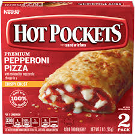

Hotpocket

Hot pockets is an easy way to get a "fresh hot" meal. But it can be tricky
to cook this meal correctly if you don't know what you're doing.
Ingredients:
Steps:
- Put the hotpocket in microwave for recommended time on box
- Let it sit in microwave its too damn hot
- Enjoy!
Other Links
Chicken Parm
Hotdog
Home Page